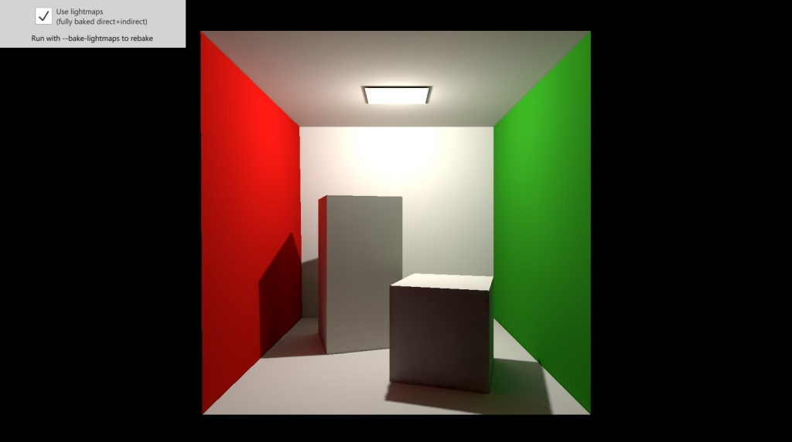

Qt Quick 3D - Baked Lightmap Example
Demonstrates the use of baked lightmaps in a 3D scene.

This example demonstrates using fully baked lighting in a scene. As a result, the rendered scene looks a lot more realistic, mainly because of the added indirect illumination. With the help of a checkbox it also allows disabling lightmapping, thus allowing comparing the rendering results of the real-time and fully baked approaches.
Setting up the Light
The scene has a single point light. When the checkbox is checked, the bakeMode of the light is set to Light.BakeModeAll.
PointLight { bakeMode: root.lightBakeMode y: 190 brightness: brightnessSlider.value castsShadow: true shadowFactor: 75 }
Setting the property to a value other than Light.BakeModeDisabled serves a double purpose: at lightmap baking time it indicates that the light is part of the lightmapped scene, contributing to it. At run time, when rendering the scene normally, it indicates the light is a fully or partially baked light, which leads to disabling certain real time calculations in materials for lightmapped models. This is why the checkbox toggles both the bakeMode property on the Light and also the enabled property of the BakedLightmap associated with the Model objects.
Setting up the Model
The Cornell box is a Model with 8 submeshes. This is encapsulated as the Box type, an instance of which is instantiated in the main scene.
Box { usedInBakedLighting: true lightmapBaseResolution: 256 bakedLightmap: BakedLightmap { enabled: root.lmEnabled key: "box" loadPrefix: "file:" } scale: Qt.vector3d(100, 100, 100) }
This model both participates in the lightmapped scene, and has a lightmap baked for it. The former is indicated by the usedInBakedLighting property. This alone does not ensure our box miniscene gets a lightmap baked for it, only that it participates in lightmapping (i.e. the light rays can bounce off the model when calculating indirect illumination).
To get the lightmap fully generated and then stored during the baking process, a BakedLightmap object with enabled set to true is set as well. The key specifies a unique identifier.
For simple deployment, the application packs the generated lightmaps (.exr files) into the execuatble via the Qt resource system. The CMakeLists.txt lists qlm_box.exr to be added as a resource. When rebaking the lightmap, the application needs to be built again so the changed file is picked up. To ensure that the engine can find the file at run time, the loadPrefix is set.
Files: